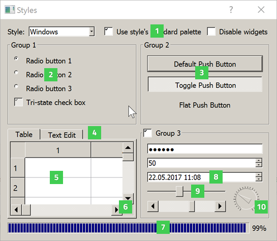
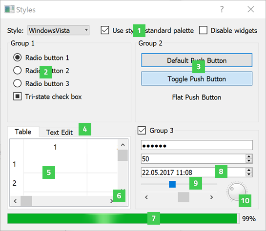
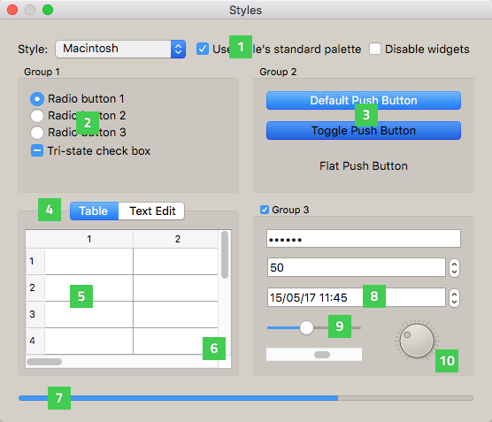
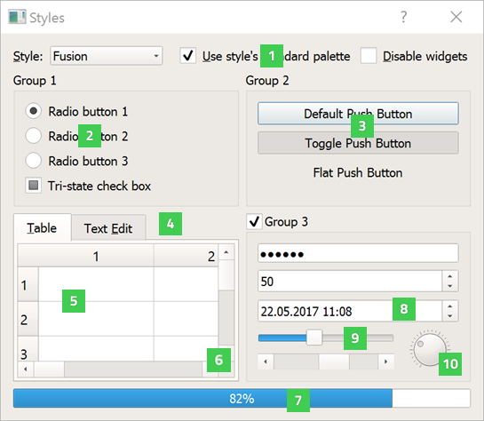
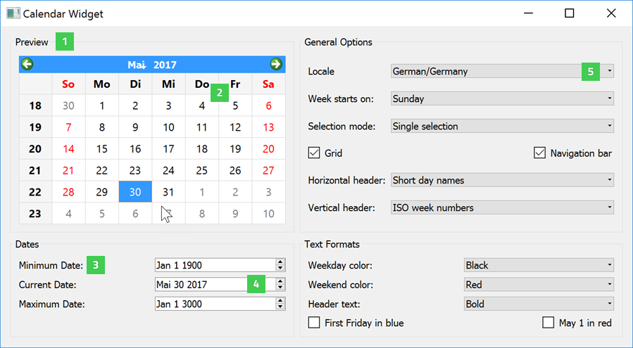
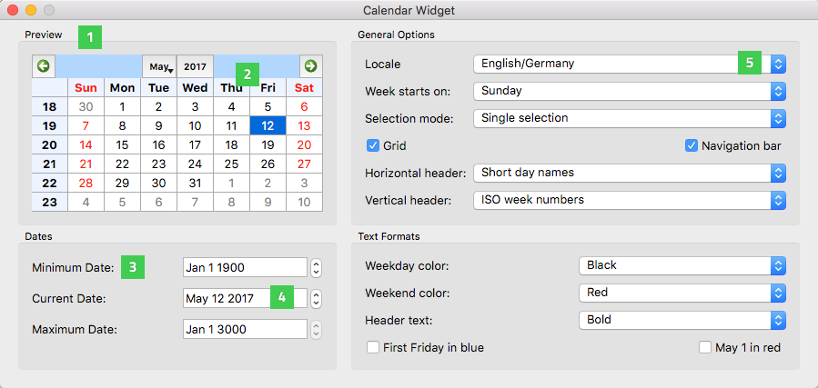

Qt Widget Gallery
Qt's support for widget styles and themes enables your application to fit in with the native desktop environment.
The widgets examples show how some of the widgets available in Qt might appear when configured to use the a particular style. Each style is only available on the respective platfom, and provides native look and feel by integrating to the platform theme. Thus, the final appearance varies depending on the active theme.
| The Windows style ("windows") is provided by QWindowsStyle. |  |
 | The Windows Vista style ("windowsvista") is provided by QWindowsVistaStyle. |
| The macOS style ("macintosh") is provided by QMacStyle. |  |
 | The Fusion style ("fusion") is provided by QFusionStyle. |
The Styles example displays the following widgets:
- QCheckBox (1) provides a checkbox with a text label.
- QRadioButton (2) provides a radio button with a text or pixmap label.
- QPushButton (3) provides a command button.
- QTabWidget (4) provides a stack of tabbed widgets.
- QTableWidget (5) provides a classic item-based table view.
- QScrollBar (6) provides a vertical or horizontal scroll bar.
- QProgressBar (7) provides a horizontal progress bar.
- QDateTimeEdit (8) provides a widget for editing dates and times.
- QSlider (9) provides a vertical or horizontal slider.
- QDial (10) provides a rounded range control (like a speedometer or potentiometer).
The Calendar Widget example displays some additional widgets, here run on Windows 10 and macOS:

Calendar Widget example on Windows 10

Calendar Widget example on macOS
- QGroupBox (1) provides a group box frame with a title.
- QCalendarWidget (2) provides a monthly calendar widget that can be used to select dates.
- QLabel (3) provides a text or image display.
- QDateEdit (4) provides a widget for editing dates.
- QComboBox (5) provides a combined button and pop-up list.